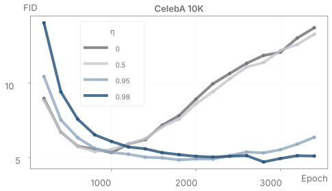
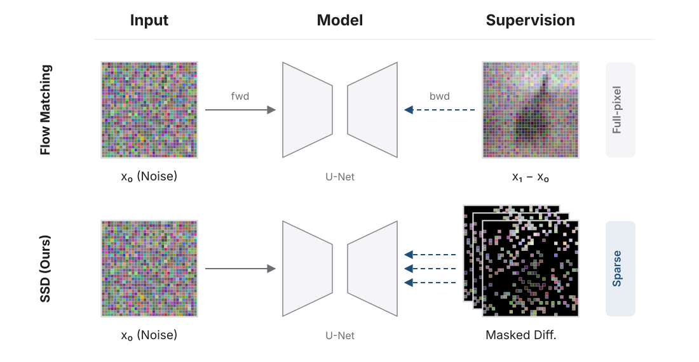
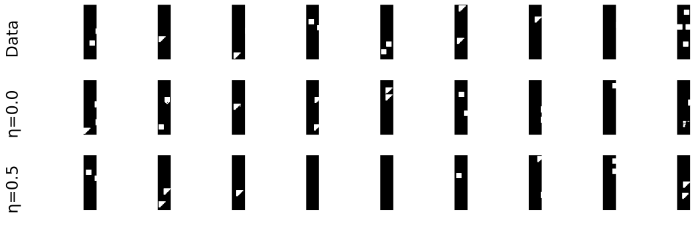

98% of pixels masked.
FID 13.72 → 5.10 on CelebA‑10K.

Sparsely Supervised Diffusion NeurIPS 2026
Mask the training loss, not the input. A few lines of code for diffusion and flow-matching models.

Up to 98% of pixels masked. Competitive FID.No change to the architecture or the sampler.
Paper

The problem
Diffusion models learn correlations from a finite training set, and some of them are accidental. The result: samples whose parts look right but do not fit together. Extra fingers. Shapes in fragments.
Diffusion models have shown remarkable success across a wide range of generative tasks. However, they often suffer from spatially inconsistent generation, arguably due to excessive correlations learned by the model. This can produce samples that are locally plausible but globally inconsistent. We propose a principled method to mitigate this issue. Our method, sparsely supervised diffusion (SSD), is a simple yet effective masking framework that can be implemented with only a few lines of code. We analytically show that SSD fundamentally alters diffusion model training by modifying the spectrum of the data covariance and that it suppresses correlations in the data covariance matrix. Experiments show that our method more accurately approximates the underlying population score function, reduces memorization on small datasets, and promotes the use of essential contextual information during generation. Moreover, even when up to 98% of pixels are masked, it achieves competitive FID scores across a range of datasets and avoids the training instability commonly observed on small datasets.
How it works
The model still sees the whole noisy image. Only the regression loss is masked, with a fresh random mask at every step.
Three lines.
Replace the mean of the squared error with a masked mean. Everything else, from the data pipeline to the sampler, stays as it is.
# prediction, target: model output and regression target
error = (prediction - target).square()
mask = (torch.rand_like(error) > eta).float()
loss = (error * mask).sum() / mask.sum().clamp(min=1)η = 0, no masking. Standard flow matching on CelebA-50K.
20% of loss entries masked. Same network, same initial noise.
Half of the loss entries masked. Same network, same initial noise.
80% of loss entries masked. The model learns from one pixel in five, and still generates whole faces.
Spatial consistency
A controlled dataset of whole triangles and squares. The baseline breaks shapes into fragments in 3,899 of 5,000 samples. SSD does so in 792.2
4.9×fewer images with scattered clusters
SSD792
Baseline3,899
11×fewer scattered clusters in total
SSD1,014
Baseline11,208
11kHands
1,000 hands per model, from the same seed. The baseline draws a wrong number of fingers 35 times. SSD, 22 times, and six-fingered hands drop from 26 to 8.3
Selected pairs: each column shares its initial noise, and at least one hand in it has a finger-count error. Click a hand to enlarge.
| Error | Baseline | SSD, η = 0.8 |
|---|---|---|
| Six fingers | 26 | 8 |
| Four fingers | 9 | 14 |
| Total | 35 | 22 |
The count covers four- and six-finger hands only. Four-fingered hands become more frequent with SSD; the total falls.
Small datasets
On 10,000 faces, the baseline's FID climbs from about 5 to 13.72 with prolonged training. Masking 98% of the loss keeps it at 5.10, and samples move further from their nearest training image.
FID during training on CelebA-10K
Lower is better · one curve per masking ratio η
Consider zero-mean Gaussian data with covariance Σ, and keep each coordinate independently with probability p = 1 − η. Masking leaves the variances on the diagonal of the covariance less affected than the correlations off it.
D = diag(Σ). Variances scale by p. Covariances scale by p². Every correlation therefore shrinks by a factor p.
Each bar shows the masked quantity as a fraction of its unmasked value: variance p, covariance p squared, correlation p.
Coordinate variances are scaled by the retention probability.
Cross-coordinate covariance is attenuated more strongly, for i ≠ j.
Variance along each eigenvector uᵢ of Σ. The spectrum governs diffusion training dynamics, so masking changes how the model learns.
FID ↓ on every benchmark in the paper. Large datasets stay competitive; small ones improve most.1
no masking
masked loss
No. The network always receives the full noisy image. The random mask applies only to the entries of the regression loss, so the model must predict every pixel but is graded on a random subset of them.
No. SSD is a change to the training loss only and is model-agnostic. We use it with a convolutional U-Net under flow matching on CIFAR-10, CelebA and LSUN Bedroom, and with DiT-XL/2 on ImageNet. Sampling is unchanged.
We did not tune it. The paper reports a range of ratios: η = 0.8 on the large flow-matching benchmarks, and η = 0.98 on CelebA-10K and ImageNet. High ratios help most when data are scarce or training runs long. Finding the optimal ratio is left for future work.
FID does not adequately reflect spatial consistency. We therefore designed targeted tests: scattered clusters in a shapes dataset, finger counts on 11kHands, and the error against a known population score in a synthetic 2D Gaussian study.
No. On CelebA-10K at 3,500 epochs, element-wise masking with η = 0.98 reaches FID 5.10, and 8 × 8 patch masks with η = 0.9 reach 5.14, against 13.38 without masking. The ratios differ, so this comparison does not isolate granularity alone.
On CelebA-10K, the average ℓ₂ distance from 10,000 samples to their nearest training images rises from 42.32 to 46.02 at η = 0.98, while FID also improves. This distance is a proxy for memorization, not a privacy guarantee.
NeurIPS 2026
1Aalto University · 2Imperial College London · 3KTH Royal Institute of Technology
4ELLIS Institute Finland · 5University of Oulu
@inproceedings{zhao2026sparsely,
title = {Sparsely Supervised Diffusion},
author = {Zhao, Wenshuai and Li, Zhiyuan and Zhao, Yi and Vali, Mohammad Hassan and Trapp, Martin and Pajarinen, Joni and Kannala, Juho and Solin, Arno},
booktitle = {Advances in Neural Information Processing Systems},
year = {2026}
}